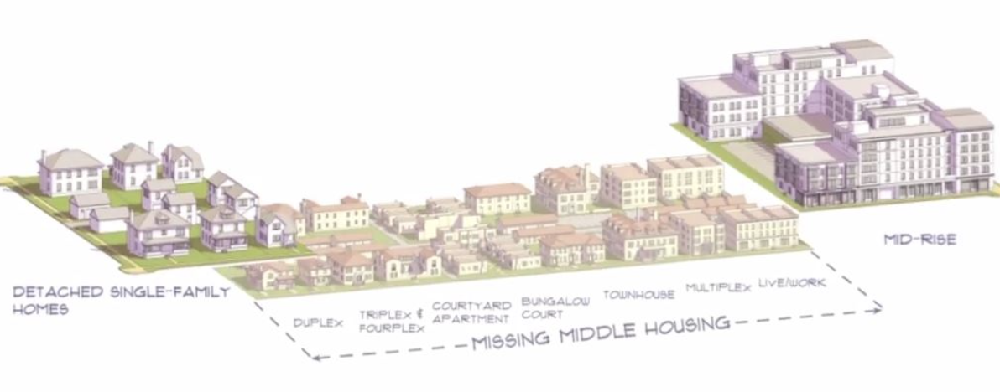

Single Family Zoning laws prohibit housing development in areas zoned off for single family homes. This means that an area zoned off for a single family home can only contain that one unit on the land, increasing housing costs and restricting housing development at a time when the demand has never been higher. Denser housing options such as duplexes and townhouses, also called missing middle housing, are therefore restricted from building in these areas which account for the majority of residential space.
This is a problem because low density housing makes costs much higher and decreases housing options for low-income families. In the midst of a housing crisis in Maine, the last thing it needs is unnecessary restrictions on affordable housing development. On top of all this, the policy was originally used as a method of segregation and even still to some extent accomplishes this.
Many states and cities in the United States have already recognized the problematic aspects of single family zoning and decided to eliminate it. Minneapolis was the first place to end this practice and most recently Oregon decided to allow more multi-family homes to be built on areas zoned for detached single family units. 70% of housing in Maine is currently reserved for single family homes and greatly limits options for denser housing or opportunities for local business within neighborhoods. These issues need to be considered carefully as reasons for Maine to follow many other states and eliminate single family zoning laws.
Single family zoning was adopted for the first time in Berkeley, California in the early 1900’s and was promoted heavily by a real estate developer named Duncan McDuffie, who would bar homeowners in his neighborhoods from selling or renting to non-white families. In addition to his own properties, he didn’t want adjacent neighborhoods allowing people of color, claiming this would lower property values and threaten public health and safety. What troubled him most was a black-owned dance hall looking to locate themselves a street over from his developments.
At this point the Supreme Court had prohibited racial segregation through zoning but this was a loophole that allowed developers to exclude certain groups without outwardly making it about race. Limiting spaces to single family homes increased the value of the homes and eliminated affordable housing development in the area. Due to the wealth gap between white and black or hispanic families, single family zoning effectively segregated many neighborhoods and even continues to do that now to some extent. By keeping affordable multi-living units separate from neighborhoods of single family homes, it’s easier to keep black families separate from white neighborhoods and this alone should be reason enough to eliminate this policy.
Maine, just like the rest of the country, should eliminate the policy of single family zoning due to its restrictive nature and harmful roots. About 2000 people in the state are experiencing homelessness and more opportunities for affordable living units could help greatly with this issue and give low-income families more options.
Putting an end to the policy also benefits everyone. Not only does it create more housing for low-income families, adding missing middle housing would likely improve neighborhoods by increasing public transportation, local business, and walkability. All of these would attract more people to the area, meaning even the sellers would benefit.
You can help support the elimination of single family zoning by contacting your legislator about the matter or spreading the word what this policy really means.
